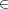
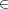
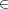
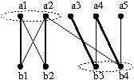
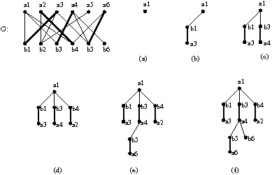
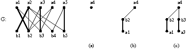

∅ para toda aresta e  E,
ou seja, toda aresta de G encontra U.
∅ para toda aresta e  E,
ou seja, toda aresta de G encontra U.
Mostre que o primeiro jogador tem uma estratégia para vencer o jogo se e somente se o grafo G não tem um emparelhamento perfeito.
Por toda esta seção adotaremos as seguintes convenções: as partes de vértices independentes de um grafo bipartido G são denotadas por A e B e escrevemos G = (A ∪ B,E). Sem perda de generalidade consideraremos como caminhos M-alternante os que têm um extremo descoberto em A.
Uma cobertura por vértices em um grafo G (não necessariamente
bipartido) é um subconjunto U ⊆ V (G) tal que e∩U∅ para toda aresta e  E,
ou seja, toda aresta de G encontra U.
Exemplo 25. No exemplo da figura abaixo temos o diagrama de um grafo bipartido, as arestas em destaque definem um emparelhamento M. O subconjunto de vértices {a1,a2,b3,b4}é uma cobertura pois todas as arestas do grafo incidem em pelo menos um desses vértices.
|  |
Uma cobertura mínima é uma cobertura com o menor número possível de vértices que é denotado por ν(G),
 | (28) |
Teorema 26 (Teorema de König, 1931). Num grafo bipartido G = (A∪B,E) o tamanho de um emparelhamento máximo é igual ao tamanho de uma cobertura mínima, ou seja
|
| (29) |
Demonstração. Para qualquer cobertura U e qualquer emparelhamento M vale que toda aresta de M tem que ter pelo menos um extremo em U, portanto |M|≤|U|. Em particular,
|
| (30) |
Agora, considere M um emparelhamento máximo em G e vamos construir uma cobertura C ⊆ V (G) da seguinte maneira: para cada aresta ab M, a A e b B, escolhemos b para C se b é extremo de algum caminho M-alternante, caso contrário, escolhemos a. Note que dessa forma temos |C| = |M|.
Vamos mostrar que C é uma cobertura. Considere uma aresta qualquer ab em E(G), a A e b B. Se ab M então a aresta encontra C. Vamos supor que ab não é aresta de M. Como M é máximo, ou a ou b ou ambos são cobertos por M.
Se M não cobre a então b pertence ao um caminho M-alternante P = a,b e como b é coberto por M, digamos a′b M, então b C. Vamos supor que M cobre a e ab′ M para algum b′ B diferente de b. Agora, se a ⁄ C então b′ C, pela construção do conjunto C. Mas, isso significa que b′ está no extremo de algum caminho M-alternante que chamamos de P.
Se b está em P então b é extremo de algum caminho M-alternante. Caso contrário, também haverá um caminho M-alternante com extremo b, ou P,a,b no caso a ⁄ V (P), ou P′,b caso a pertence a P, onde P′ denota o subcaminho alternante de P com extremo em a. Em ambos os casos teremos b C pois não pode haver caminho M-aumentante G logo b deve estar coberto por M. Com isso temos μ(G) = |M| = |C|≥ ν(G), ou seja,
|
| (31) |
O seguinte resultado dá uma condição necessária e suficiente para que exista um emparelhamento que cobre umas das partes do grafo.
Teorema 27 (Teorema de Hall, 1935). Em todo grafo bipartido G = (A∪B,E) existe um emparelhamento que cobre A se, e somente se,
 | (32) |
Demonstração. Se existe um emparelhamento M que cobre A então tome H = (V (G),M). Para todo S ⊆ A temos |NG(S)|≥|NH(S)| = |S|.
Agora, suponha que |N(S)| ≥ |S| para todo S ⊆ A. Seja U = A′∪ B′ uma cobertura mínima em G com A′ ⊂ A e B′ ⊂ B. Se não existe um emparelhamento que cobre A então |U| < |A| pelo teorema 26.
Notemos que essa última desigualdade implica que |B′| < |A - A′| e que não há arestas de A-A′ para B -B′, pois elas não estariam cobertas por U, ou seja N(A - A′) ⊆ B′. Portanto
|
| (33) |
contrariando a hipótese. □
Essa demonstração é bastante simples pois todo o trabalho já foi feito no Teorema de König. Vejamos uma demonstração que não depende de outros resultados.
Demonstração alternativa. Vamos provar por indução em |A| que se |N(S)|≥|S| para todo S ⊆ A então existe um emparelhamento que cobre A.
Se |A| = 1 então facilmente constatamos que existe um emparelhamento que cobre A. Seja G = (A ∪ B,E) um grafo bipartido que satisfaz (32) e suponha que todo grafo bipartido (A′∪B′,E) com |A′| < |A| que satisfaz a condição de Hall (32) tem um emparelhamento que cobre A.
Caso 1: |NG(S)| > |S| para todo S ⊂ A não-vazio. Escolha uma aresta ab E e considere o grafo bipartido G′ = G - a - b sobre A′ = A -{a} e B′ = B -{b}.
Nesse caso, para cada S ⊆ A′⊂ A vale que |NG′(S)|≥|S| e pela hipótese indutiva concluímos que existe M que cobre A′. Portanto M ∪{ab} cobre A.
Caso 2: |N(S)| = |S| para algum S ⊂ A não-vazio. O grafo bipartido induzido H = G[S ∪N(S)] satisfaz a condição de Hall (os vizinhos de S em H são os mesmo vizinhos em G) e pela hipótese indutiva podemos concluir que existe um emparelhamento M em H que cobre S.
Agora considere o subgrafo bipartido induzido J = G[S ∪NG(S)] e suponha que exista X ⊆S tal que no grafo J vale |NJ(X)| < |X|. Teremos no grafo G
Para concluir a demonstração é suficiente observarmos que M ∪M′é um emparelhamento em G que cobre A. □
Corolário 28 (Forma defectiva do teorema de Hall). Em todo grafo bipartido G = (A∪B,E) existe um emparelhamento que cobre A a menos de d vértices se, e somente se,
 | (34) |
16.1. Algoritmo de Edmonds. O algoritmo abaixo recebe um grafo bipartido G = (A ∪ B,E) e devolve um emparelhamento que cobre A ou um subconjunto S ⊆ A tal que |N(S)| < |S| cuja existência é garantida pelo teorema de Hall.
A idéia do algoritmo é construir caminhos alternantes a partir de um vértice não-coberto em A. Por exemplo, no grafo da figura abaixo, o algoritmo começa pelo vértice a1 não-coberto por M. O próximo passo é escolher um vizinho de a1. Se existir algum vizinho não coberto, então achamos um caminho aumentante, caso contrário uma aresta de M incide nesse vizinho e temos um caminho alternante, no exemplo a1,b1,a3. O próximo passo é continuar a busca a partir de um vizinho dos vértices da forma ai já escolhidos. Notemos, entretanto, que basta buscar tais vizinhos dentre os vértices ainda não escolhidos, no nosso exemplo, após o estágio representado pela figura (e) abaixo não há necessidade de considerar a aresta {a3,b5} pois o novo caminho alternante definido por essa aresta seria redundante para nossos propósitos. No estágio dado pela figura (f) chegamos a um caminho aumentante.
|

|
Quando o algoritmo descobre um caminho aumentante, usa-o para obter um emparelhamento com mais arestas e recomeça o processo. Caso contrário, teremos construído caminhos alternantes que começam num vértice descoberto e todos terminam num vértice coberto. Os vértices desses caminhos definem um conjunto que viola a condição de Hall. Por exemplo, na figura abaixo o algoritmo começa pelo vértice não-coberto a4. Esse vértice tem os vizinhos b2 e b3 que estão cobertos pelas arestas a1b2 e a3b3 respectivamente. O vértice a1 já tem todos os seus vizinhos escolhidos, assim como a3, e não se pode mais estender os caminhos. Nesse caso N({a1,a3,a4}) = {b1,b2} e {a1,a3,a4}é um obstáculo para um emparelhamento cobrir A.
|

|
Edmonds(G)
Seja M um emparelhamento arbitrário em G; 2: Se ( existe u em A não coberto por M) então S <- {u}; T <- vazio; senão Devolva M; 7: Se ( N(S) = T ) então Devolva S; senão Escolha b em N(S)-T; Se ( existe a em V-S tal que ab em M ) então Insere a em S; Insere b em T; Volte para 7; senão P <- caminho M-aumentante de u até b; M <- diferença simétrica de M e E(P); Volte para 2; |
| Candidato | Áreas
| |||||
| Matem. | Química | Física | Biol. | Psicol. | Ecol. | |
| Antônio | × | × | ||||
| Bernardo | × | × | × | × | ||
| Cássia | × | × | × | |||
| Débora | × | × | × | × | ||
| Evandro | × | × | ||||
| Fernanda | × | × | ||||
Execute um algoritmo conhecido que determine o maior número de professores que a escola pode contratar.
Suponha que esse grafo orientado D que você construiu modela uma rede de computadores onde cada aresta tem a capacidade de 1 unidade de transmissão. Mostre que o fluxo máximo de s para t é igual ao número máximo de arestas num emparelhamento em B.
Dinf — UFPR